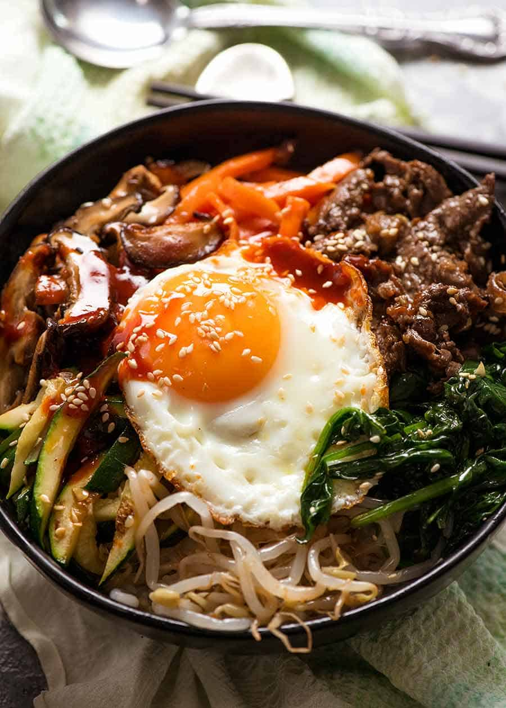

Bibimbap

Ingredients
- Carrots
- Bean Sprouts
- Green Onion
- 1 Garlic Clove
- An Egg
- Ground Beef
- Soy Sauce
- Brown Sugar
- Gojuchang
- Toasted Sesame Seeds
Directions
- Blanche Bean Sprouts. after running under cold water season with salt and
minced garlic
- Saute carrots on medium high heat until soft yet still crispy. Remove from
pan and add ground beef
- Brown ground beef and add brown sugar and soy sauce
- Fry an egg sunny side up. Assemble rice bowl with Carrots, Bean sprouts, Green onions,
Ground beef, and put the egg on top. Voila